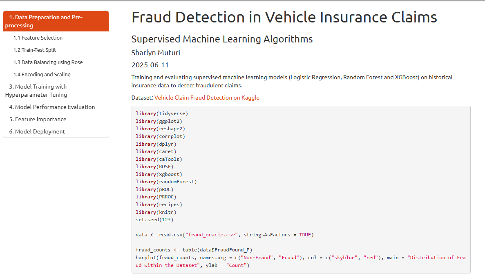
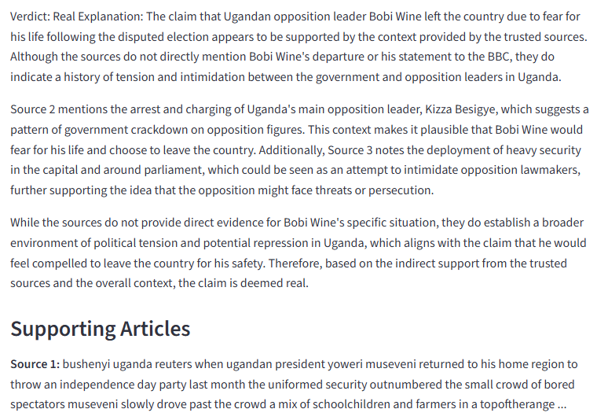
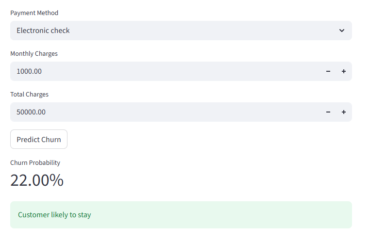
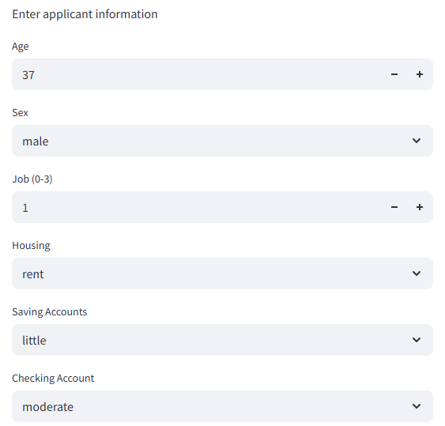
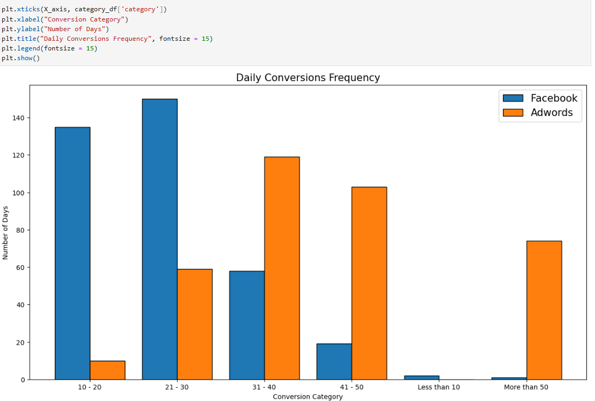

Analyzed and forecasted stock price movements using Prophet in Python and ARIMA models in R. Leveraged Prophet predictions to construct and optimize a portfolio, maximizing expected returns relative to risk using mean-variance optimization and the Sharpe ratio.

Implemented supervised machine learning models to detect potential fraud in vehicle insurance claims using historical claim data. Evaluated model performance using classification metrics, with Logistic Regression, Random Forest and XGBoost implemented in both Python and R.

Convolutional Neural Networks (CNNs) for image classification, with data preprocessing, model tuning and performance evaluation using accuracy and loss metrics.

Collaborative-filtering recommender system using user–movie interaction data to generate personalized recommendations based on similarity patterns.

Implemented a machine learning pipeline to classify news articles as Fake or Real using LIAR, ISOT and FakeNewsNet datasets. Preprocessed text, applied TF-IDF vectorization, handled class imbalance and trained Logistic Regression Model.

End-to-end machine learning pipeline to predict telecom customer churn. The pipeline handles preprocessing (scaling, encoding and binary mapping), applies SMOTE to balance the training data and feeds it into a classification model.

Predicting credit risk using machine learning techniques on historical loan application data. Models evaluated include Decison Trees, Extra Trees, XGBoost, CatBoost and Random Forest, with feature engineering, hyperparameter tuning and probability-based risk scoring.

Conducting statistical tests, regression analysis and trend visualizations on Facebook and Google AdWords campaign data to evaluate campaign performance and identify the most effective advertising channel.